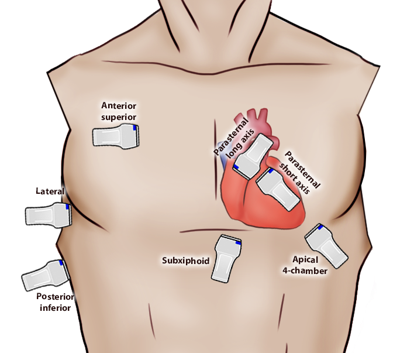

You decide to perform a lung POCUS first. Click through the different probe locations.

| Normal | What you See |
|---|---|

|

|
Lateral
Posterior Inferior
Subxiphoid
Parasternal Long Axis
Parasternal Short Axis
Apical 4-Chamber
A 79M arrives via EMS to the emergency department with shortness of breath and delirium.
He has a PMHx of HTN, DLD, T2DM (HbA1c 6%), and angina. His medications include amlodipine 5 mg po daily, hydrochlorothiazide 25 mg po daily, atorvastatin 40 mg po daily, metformin 1000 mg po bid, sitagliptin 100 mg po daily, aspirin 81 mg po daily, and a prn nitro spray.
His vital signs are as follows: HR 110, BP 98/66, SpO2 93% on 6L by nasal prongs, RR 25, and T 36.8. On examination, he is in respiratory distress with bilateral crackles and reduced bibasilar breath sounds on auscultation. You are unable to appreciate the JVP (due to body habitus), murmurs, or extra heart sounds. He is alert but confused and unable to answer your questions.
You have the following bloodwork: CBC (normal), electrolytes (normal), creatinine (elevated at 120), venous blood gases (mild respiratory alkalosis), and troponin (elevated at 220). His ECG shows diffuse mild ST depressions and T wave inversions.
You're awaiting a chest X-ray. You see that he had a previous echocardiogram done last year, which shows a normal LVEF of 60%, no RWMA, and no significant valvular disease.
You decide to perform a POCUS.